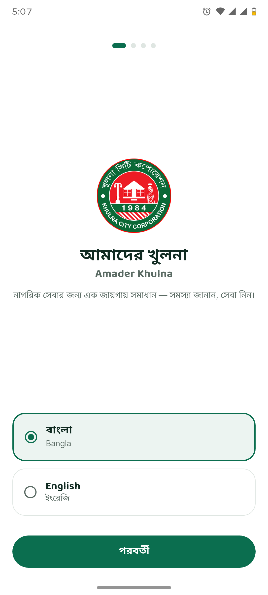
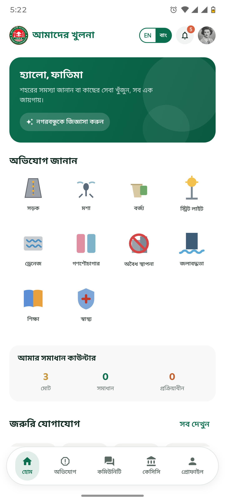
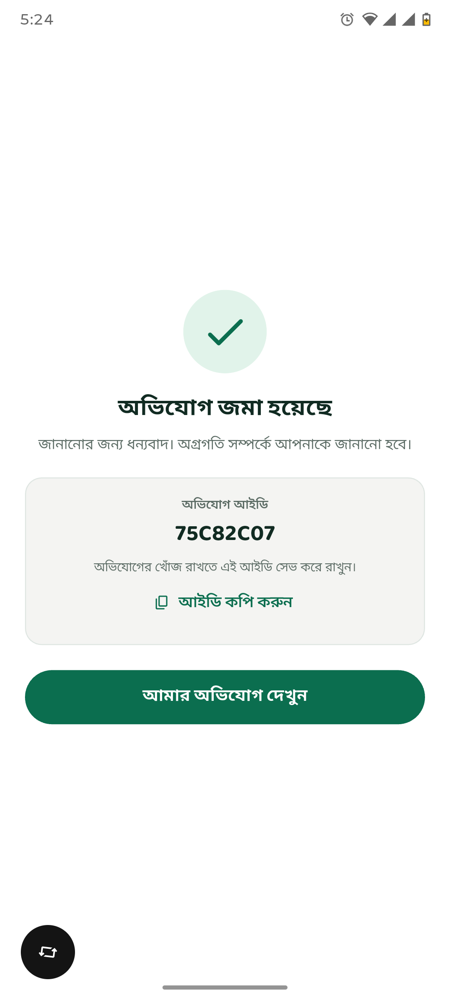
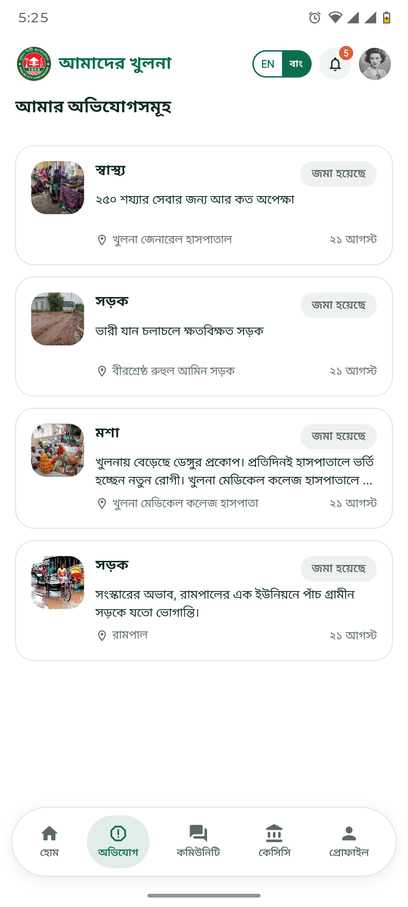
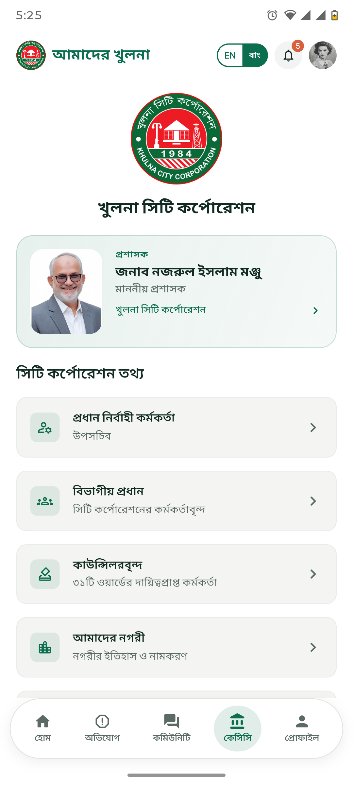
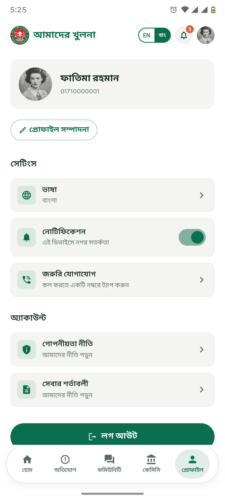
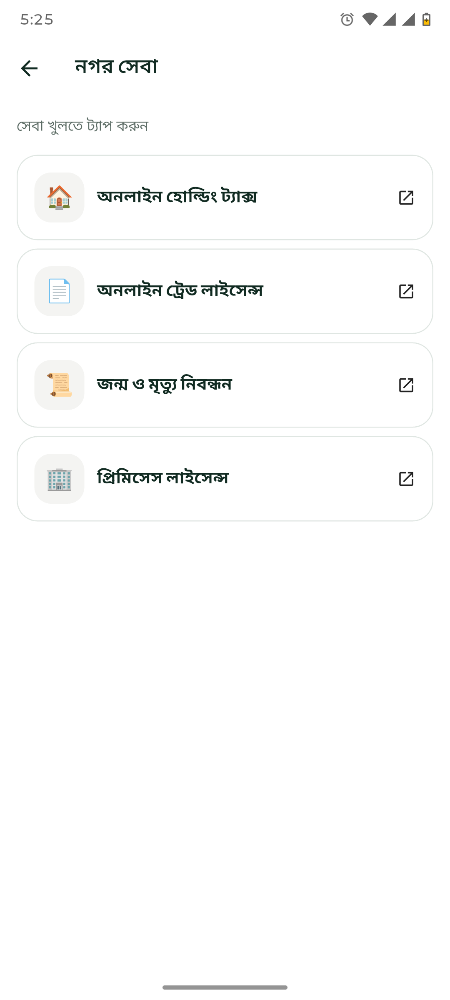
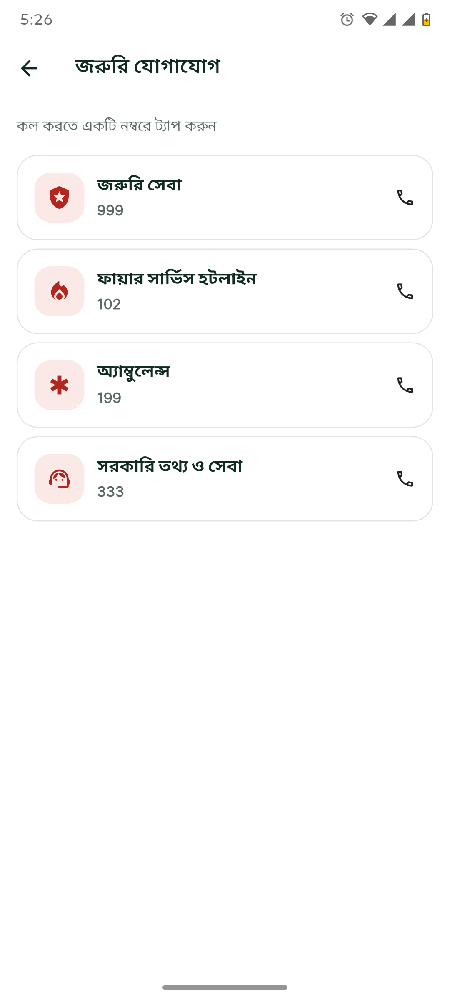
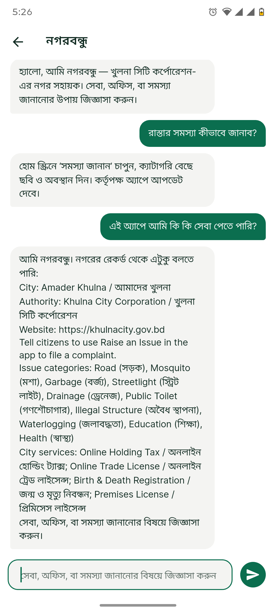

Amader City
One platform for every city — their brand, your engine

About This Project
Amader City is a reusable citizen-service platform that any Bangladeshi city corporation can deploy under its own brand. Citizens report issues — roads, garbage, drainage, street lights, mosquito breeding, corruption, and more — with photo, location, and category, and get an instant ticket ID to track resolution. City officials manage every report, ward, official, and piece of content through a dedicated web dashboard. The first deployment, Amader Khulna, is currently under development.
This is a project I own end to end: writing the BRD and PRD, defining the UI/UX flow and Figma design, and building the citizen app, the officials' admin dashboard, and the backend that powers both.
Key Features
- One-tap issue reporting with instant ticket ID and status tracking
- Ten+ configurable categories, including Corruption and Suggestion
- Dedicated mosquito and disease-surveillance reporting flow
- Talk discussions, polls, and push-notified disaster alerts
- Distance-sorted nearby services directory, strictly scoped to city boundary
- Officials directory, searchable by ward or zone
- Web dashboard with case management, SLA flags, analytics, RBAC, and audit logs
- Fully configuration-driven — branding, wards, categories, and officials per city
App Screenshots
Amader Khulna — the first city on the platform








